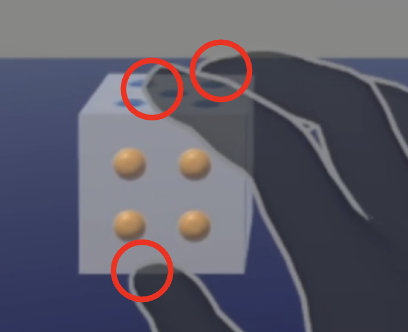
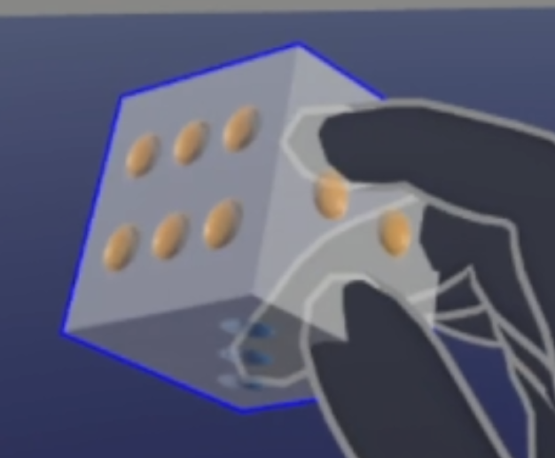
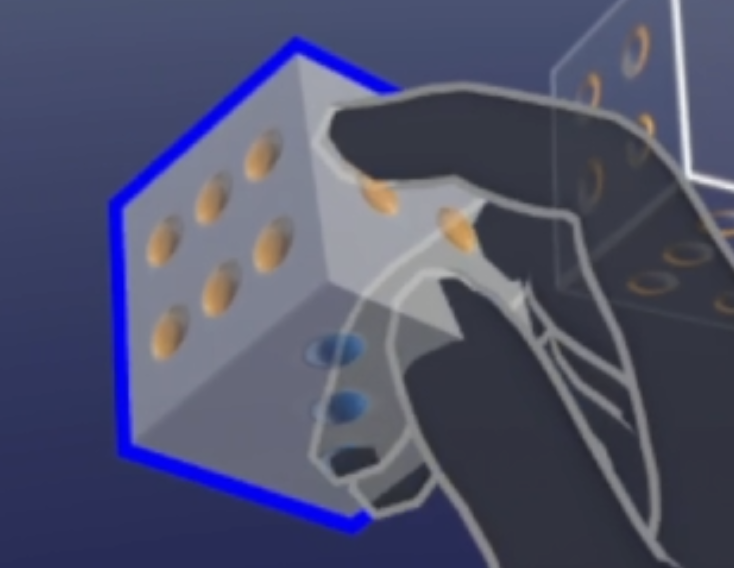

Instructions
엄지, 검지, 중지의 세 손가락을 이용해 손 안에서 주사위를 움직입니다.



- 엄지, 검지, 중지로 주사위를 잡습니다. (세 손가락 모두 닿아야 합니다)
- 세 손가락으로 주사위 표면을 밀어서 돌리는 느낌으로 회전합니다.
- 손가락끼리 너무 모이지 않도록 주의해주세요./li>
- 세 손가락의 움직임을 멈추면 주사위를 '얼려' 손에 고정시킬 수 있습니다.
- 굵은 파란 테두리를 확인합니다.
- 주사위를 얼린 상태를 해제하려면 주사위를 놓았다가 다시 잡습니다.
- 회전과 얼림을 적절하게 섞어 주사위의 방향을 맞춥니다.
Tips
- 약지, 소지는 주사위에 영향을 주지 않습니다. 어떤 모양이든 편한 자세로 두세요.
- 세 손가락이 너무 가까이 모여도 주사위를 얼립니다.